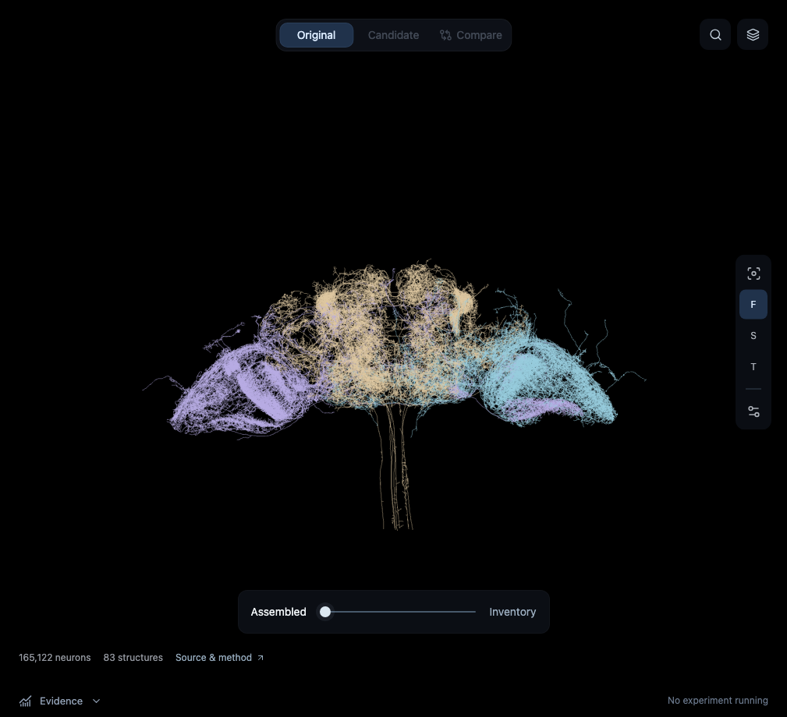

Actual current atlas capture · static in this preview
Existing evidence area · extended
Discovery evidence
RESEARCH
Inspect failure patterns and relevant literature
Each summary links to measured diagnostics or cited sources.
HYPOTHESIS
Protect memory from distractor input
Predicted effect, explicit module/code changes, and disconfirming controls.
ADMISSION → EVALUATION
Test generated code before training
Interface, gradient, resource and sandbox checks; then measured outcomes.
| Candidate / control | Change | Validation | Status |
|---|---|---|---|
| Original | Source baseline | Not measured | Preview only |
| Module candidate | Agent-written gated state | Not measured | Proposed |
| Module-only control | Remove source recurrence | Not measured | Required control |
Reuse the evidence you already have
Existing training curves, paired decisions, latency and artifact downloads live here. Add code/graph diffs, hypothesis links, compute-matched controls and confirmation status.
Selecting a row would highlight its source ancestry in the existing atlas and open candidate detail.
↙ ↘
Later: explicit multi-parent composition